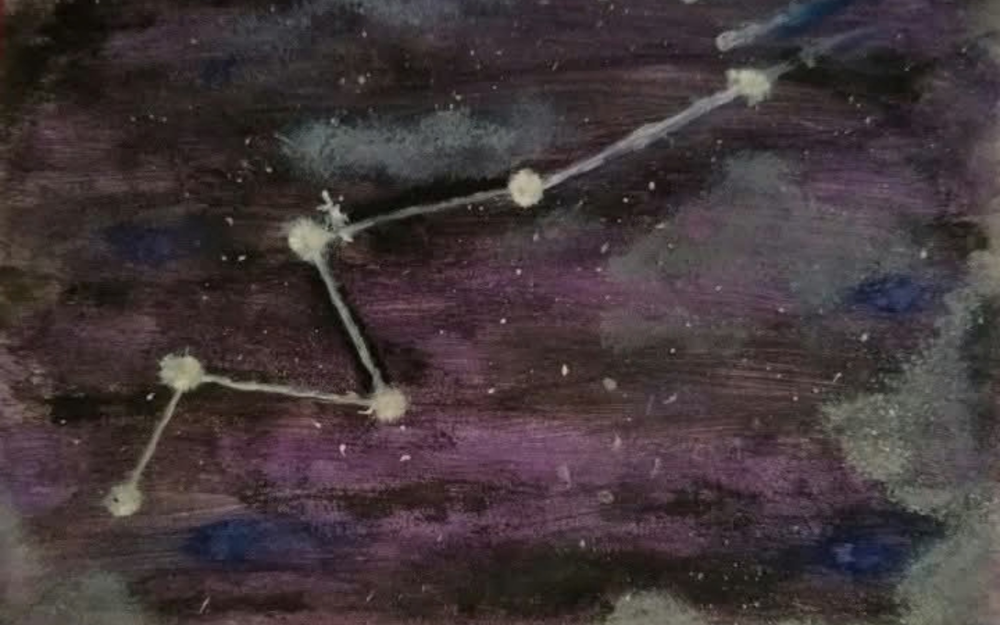
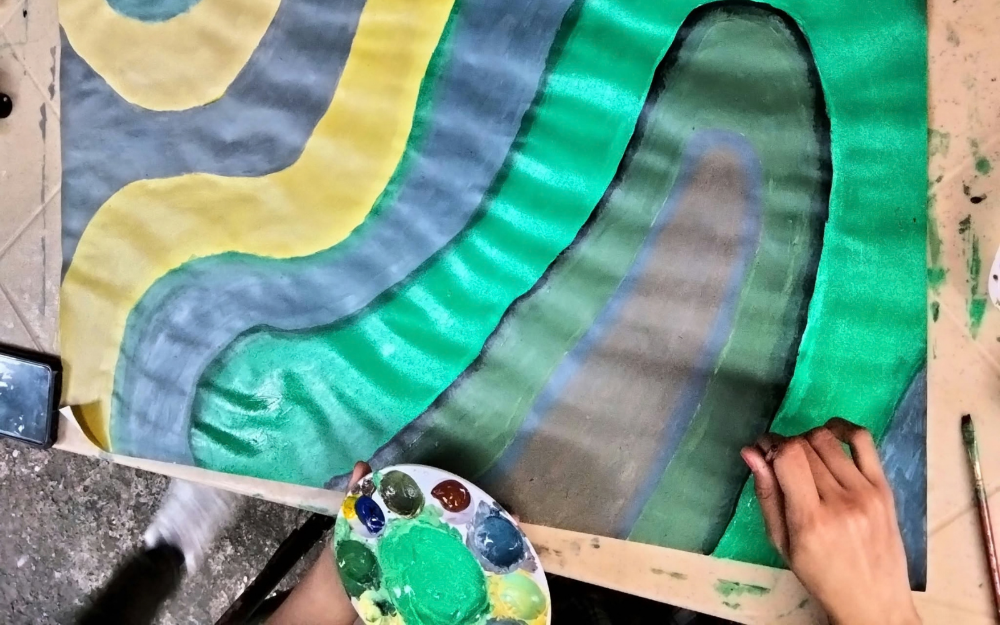
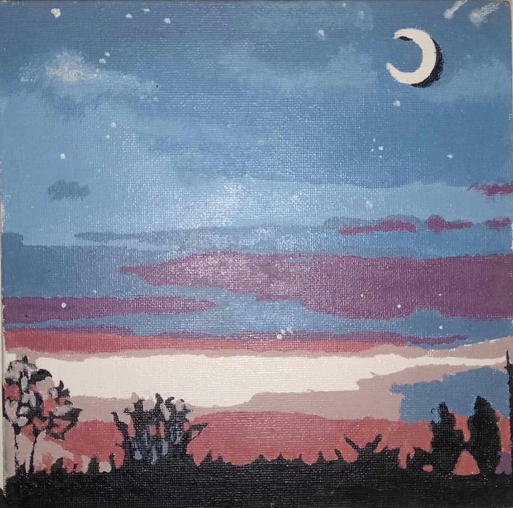

Constellation Painting
Stars
Mythological Figures, Animals, or Objects.

Stars
Mythological Figures, Animals, or Objects.
Oil Painting
Advantage and Disadvantage of Media in our lives.

Acrylic Painting
Made for OS Wallpaper visuals through paint.

Acrylic Painting
Scenery Painting in canvas using acrylic paint.